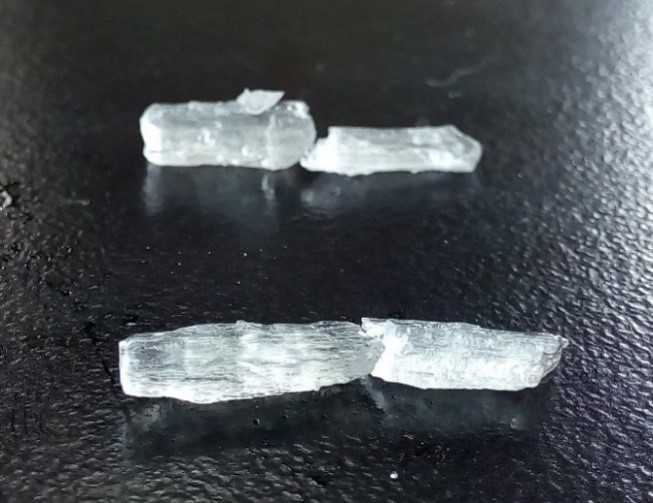

水合離子化合物之結晶探討
組員:周劭紘、林蔚恩
摘要
這次的研究主要是醋酸鈉以及硫代硫酸鈉的結晶，發現乙酸鈉及硫代硫酸鈉運用乙醇做為溶劑，和以水作為溶劑有不同的現象。經過一連串的實驗，我們發現在硫代硫酸鈉溶液中加入乙醇有助於結晶的形成，而且也發現此溶液有分層的現象產生，因此我們針對此種溶液有更深入的研究。
研究動機
曾經看過結晶過程的影片，因此嘗試能否用乙酸鈉及硫代硫酸鈉製備出大結晶，在此過程中，陸續發現一些現象，也依循這些現象進行進一步的研究。
研究目的
(一) 製備乙酸鈉及硫代硫酸鈉結晶
(二)針對硫酸鈉溶於酒精後產生的現象進行討論
實驗原理
溶解度：每100g溶劑溶解藥品的量，例如100g水可以溶73g硫代硫酸鈉，那麼水對硫代硫酸鈉的溶解度就是73/100g水。而大多數離子化合物的溶解度和溫度呈正相關，因此可以透過加溫提高溶解度，再使之降溫析出晶體。
擴散養晶：將希望培養出晶種的溶液與易揮發且易溶於水的藥品(像是乙醇、丙酮)放在封閉的空間中，藥品揮發後，溶於要養晶的溶液中，即可使晶種析出。
結晶水合物：結晶水合物是指含有結晶水的物質，其中的水分子屬於組成結晶水合物化學性質固定的一部分。 許多物質從水溶液裡析出晶體時，晶體裡常含有一定數目的水分子，這樣的水分子就稱為結晶。
實驗方法
乙酸鈉晶體的製備：乙酸鈉水溶液有過飽和的現象，一旦開始結晶就會整杯結成一整塊。我們希望能養出晶形與顆粒較為分明的晶體。
(一) 靜置結晶
實驗方法：將三水合乙酸鈉的結晶水列入溶劑計算，再加水使水的總量達到50mL，用加熱板加熱使乙酸鈉完全溶解，之後蓋上玻璃板靜置，待其冷卻結晶

(二) 擴散養晶法
實驗方法：重複（一）之步驟待溶液降溫到接近室溫後，將裝有溶液的燒杯連同裝有5 mL乙醇或丙酮的小瓶，放入塑膠罐後加蓋，並靜置一週。
(三) 在低濃度溶液加入晶種
實驗方法：重複（一）之步驟待溶液降溫到接近室溫後，加入晶種。
記錄：在濃度2M的溶液中加入晶種不久後，晶種反而溶掉了；而5M的溶液則在加入晶種後就迅速結塊。
(四) 用乙醇水溶液當作溶劑
實驗方法：將三水合乙酸鈉逐次加入20 mL的90%乙醇當中，如果加熱攪拌溶解完了，就再加入2g，直到很難再繼續溶解。待溶液降溫到接近室溫後，將溶液過濾，之後靜置。
記錄：後來我們總共加了22g的三水合乙酸鈉，過濾完靜置一段時間後，有乙酸鈉陸續析出結晶，晶體呈細長條狀，彼此之間並不相連，沒有結塊。（如圖三）
製備硫代硫酸鈉結晶
(一) 蒸發結晶
實驗步驟：
1. 取50mL水至燒杯中
2. 加入硫代硫酸鈉7.3g
3. 放到加熱板上加熱，使燒杯中的硫代硫酸鈉完全溶解
4. 取下燒杯，放到陰涼處，蒸發一週，觀察其結果
紀錄：嘗試制備硫代硫酸鈉結晶兩次後，都沒有結晶
(二) 擴散養晶法
由於無法以傳統的養晶方式製備出硫代硫酸鈉的結晶，因此決定另尋方法，首先想到的是在實驗課使用過的擴散養晶法。
實驗步驟：
1. 取50mL水至燒杯中
2. 加入硫代硫酸鈉7.3g
3. 放到加熱版上加熱，使燒杯中的硫代硫酸鈉完全溶解
4. 從加熱版取下燒杯，置於一旁冷卻
5. 取一小玻璃瓶，加入5mL乙醇
6. 取一塑膠罐，將冷卻完的硫代硫酸鈉溶液的燒杯、含乙醇的小玻璃瓶放入其中並加蓋
7. 靜置此裝置一星期，觀察其變化
紀錄：嘗試以乙醇進行擴散養晶法三次之後，仍然沒有結果，後來有增加乙醇的量到10mL，也有把乙醇更換為丙酮，然而仍然沒有結晶。
經歷許多次嘗試仍然無法製備出硫代硫酸鈉的結晶，在一次的實驗中想到，擴散養晶法的原理是，利用乙醇、丙酮等易溶於水的有機物質，在它們溶於水中的過程中，使得硫代硫酸鈉逐漸被析出而結晶，於是想到如果將酒精與水及硫代硫酸鈉混合，然後一起加熱，這樣的作法能否長出結晶。
在進行這項嘗試之前，必須先確認硫代硫酸鈉對乙醇的溶解度，經過實驗，發現它幾乎不溶。
(三) 用乙醇及水當作溶劑
實驗步驟：
1. 取10mL水至燒杯中
2. 取40mL乙醇至燒杯中
3. 加入硫代硫酸鈉7.3g
4. 放到加熱版上加熱，使燒杯中的硫代硫酸鈉完全溶解
5. 在燒杯上蓋上玻璃板，藉此減少乙醇因為沸點較低，容易揮發的影響
6. 從加熱版取下燒杯，並將燒杯上的玻璃板取下，置於一旁冷卻
7. 取下燒杯，放到陰涼處，觀察其結果
紀錄：
燒杯自加熱板取下，降到室溫後，逐漸開始長出結晶（如圖四、五）
因為之前嘗試的方法都無法長出結晶，為了確保用乙醇當溶劑這件事情有再現性，因此又重複做了數次實驗，仍然得到相同的結果
嘗試不同濃度的乙醇溶液當作溶劑，最後決定用80%的乙醇當作溶劑，十分偶然的發現硫代硫酸鈉與乙醇及水混合的溶液有分層的性質。
因為在製備硫的過程中，會用到乙醇、水、硫代硫酸鈉，因此猜測兩者之間是否有關連性，以下是觀察到此溶液的性質：
1. 一開始燒杯底部的部分是顆粒狀的硫代硫酸鈉，其上層則是乙醇及水的混合液體，在加熱的過程中，觀察到硫代硫酸鈉熔化成液體；而非先溶解於上層的液體，然後再分成兩層
2. 即使攪拌燒杯內分成兩層的溶液，靜置幾秒鐘後，仍會恢復兩層的狀態
3. 剛從加熱版上取下的溶液，其上層是略混濁的(白白的)，下層則是透明的（如圖六）
4. 靜置一段時間後(還沒開始結晶)下層的溶液會變得比上層混濁（如圖七）
5. 等到結晶完成後，將結晶自燒杯中取出，整杯溶液呈現透明，且不分層
6. 自加熱板上取下燒杯(仍然蓋著玻璃板)，則下層溶液會變得混濁，但是不會結晶
硫代硫酸鈉溶液的研究
經過觀察，發現硫代硫酸鈉溶液會分成兩層，而且具備上述觀察到的性質，接著，我們進行以下的實驗，希望對此溶液有更進一步的了解。
(一) 測定硫代硫酸鈉上、下層溶液的沸點
過程：
1. 配一杯40ml乙醇、10ml水、7.3g硫代硫酸鈉的溶液
2. 把上層及下層溶液分別抽取出來，並測量其沸點
紀錄：下層溶液沸點約98度C、上層約80度C
(二)檢驗上、下層溶液中，硫代硫酸鈉的含量
過程：
分別抽取硫代硫酸鈉溶液中的上、下層溶液，並分別把他們蒸乾
紀錄：
下層溶液蒸乾後的狀態都差不多，上層溶液蒸乾後的結果有著相當大的差異
(三)測量硫代硫酸鈉溶於乙醇後分層的上層溶液的密度變化
1. 先配一杯40ml乙醇、10ml水、7.3g硫代硫酸鈉的溶液
2. 自加熱板取下後，準備兩個量筒，加入上層溶液10ml，再秤重，最後算出密度（g/cm^3）
根據實驗數據，可以發現其密度的變化很小
(四) 用已知濃度的碘溶液滴定硫代硫酸鈉溶於乙醇後分層的上層溶液
過程：
每隔五分鐘抽取一毫升硫代硫酸鈉溶於乙醇後分層的上層溶液進行滴定。
(五)實驗硫代硫酸鈉在不同有機溶劑中分層的現象
討論
三水合乙酸鈉
1. 將15M的結塊鑿開，發現底部有不少柱狀晶體，並把它挖出來（見圖九），這也證實養出晶形較為分明晶體的目標有可行性。但純靜置冷卻都會結成一整塊，因此我們決定嘗試擴散養晶法，希望能養出顆粒分明的晶體。我們也曾將濃度8、10和12M沒加蓋靜置兩個星期，結果水蒸發了一半以上，全都結成一整塊，而攀晶高度則和濃度呈負相關。推測可能是高濃度的部分，蒸發的水較少，或是溶液對杯壁的附著力較低，導致攀晶的高度較低。
2. 晶種之所以會溶掉是因為2M是未飽和溶液，而在濃度高到一定程度的溶液中加入晶種則會導致連鎖反應。維持過飽和的狀態是很不穩定的平衡，沒有擾動就不會析出，一旦有擾動，即使微乎其微，也會導致連鎖反應，造成大量晶體快速析出。即使想要慢慢逼近兩種狀態的臨界濃度，但溫度、濕度和風的變化以及加入晶種，對它來說都是擾動，要考慮的因素實在太多，因此這個目標不切實際。後來我們想到擴散養晶是利用乙醇等溶於水的有機溶劑將溶質慢慢逼出來的原理，決定嘗試用乙醇水溶液作為溶劑。
硫代硫酸鈉
1. 上層溶液密度呈現上升的趨勢，而因為上層溶液的起始密度跟乙醇都差不2.多，推論上層大部分是乙醇。
2. 即使已經開始結晶，其下層溶液的密度仍保持不變，因此推論在結晶過程中，其成分並沒有改變太多。
3. 上層溶液硫代硫酸鈉含量的差別相當大，其中，一加熱完就開始蒸乾的上層溶液，含有較多的硫代硫酸鈉（蒸乾後還殘留0.29g）；加熱完後先放置一段時間，甚至結晶後才進行蒸乾的上層溶液，含有較少的硫代硫酸鈉（看得出有殘留一些粉末，但重量低於0.03g）。
4. 我們將硫代硫酸鈉溶於不同碳數、氫氧基位置和數量、連接方式的醇的水溶液，結果發現決定分層與否的因素只有氫氧基的數量。
5. 不論是直接將溶質溶於混合好的乙醇水溶液，或是先將溶質溶於水再加入乙醇混合均勻，乙酸鈉與硫代硫酸鹽之外的溶質都無法溶於乙醇水溶液，而即使先用水完全溶解，在加入乙醇混合後溶質也會以粉末狀被逼出，即使是硫酸鈉也不例外。其中硫酸銅的粉末有白色也有藍色的，白色的部分應該是結晶水被乙醇搶走。而乙酸鈉溶解後也沒有分層，只有硫代硫酸鈉和硫代硫酸銨有分層現象，因此硫代硫酸根才是導致分層現象的主因。
結論
乙酸鈉
用乙醇水溶液做為溶劑可以養出晶形與顆粒較為分明的乙酸鈉晶體。
硫代硫酸鈉
1. 上層溶液大部分是乙醇，下層溶液大部分是水。
2. 上層溶液由乙醇和少部分硫代硫酸鈉組成，下層溶液的成分則是水和大部分硫代硫酸鈉。而上層溶液中的硫代硫酸鈉，會逐漸往下層移動，原因可能是下層溶液開始結晶，使溶液的濃度下降，再加上晶種出現後的附著作用，使上層溶液中的硫代硫酸鈉往下補充。
3. 硫代硫酸鈉溶解於一元醇水溶液會分層，二元或三元醇則否。
4. 對水有一定溶解度的硫代硫酸鹽溶於乙醇水溶液會產生分層現象，再綜合上一個結論，可知分層現象的原因是硫代硫酸鹽及一元醇之間的反應。
參考資料
科技大觀園 速成鐘乳石:醋酸鈉過飽和溶液的結晶https://scitechvista.nat.gov.tw/c/9dnC.htm
科技大觀園 科學的未解之秘 https://scitechvista.nat.gov.tw/c/sVMU.htm
教育雲 詞條名稱：結晶熱 https://pedia.cloud.edu.tw/Entry/Detail/?title=%E7%B5%90%E6%99%B6%E7%86%B1
教育雲 詞條名稱：結晶水 https://pedia.cloud.edu.tw/Entry/Detail/?title=%E7%B5%90%E6%99%B6%E6%B0%B4
教育雲 詞條名稱：晶粒生長https://pedia.cloud.edu.tw/Entry/Detail/?title=%E6%99%B6%E7%B2%92%E7%94%9F%E9%95%B7